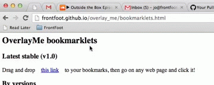

Drag and drop overlay_me to your bookmarks, like shown:
Then go on any web page and click it to load overlay_me :)
latest v1.x overlay_me (155K) - raw file
latest v0.x overlay_me (224K) - raw file
Full project here: https://github.com/frontfoot/overlay_me